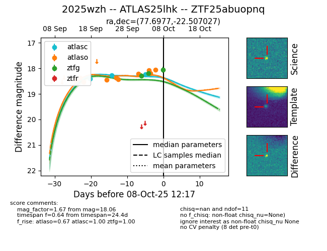
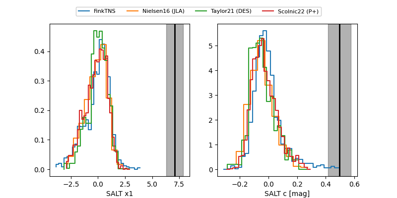

FINK: ZTF25abuopnq
Lasair: ZTF25abuopnq
ALeRCE: ZTF25abuopnq
TNS: 2025wzh
YSE: 2025wzh
ZTF25abuopnq (ztf,fink)
2025wzh (tns,yse)
ATLAS25lhk (atlas)
equatorial (ra, dec) = (77.6977,-22.50703)
galactic (l, b) = (223.8687,-31.60955)


last atlasc=18.24, atlaso=18.05, ztfg=18.06
3 atlasc, 10 atlaso, 3 ztfg detections